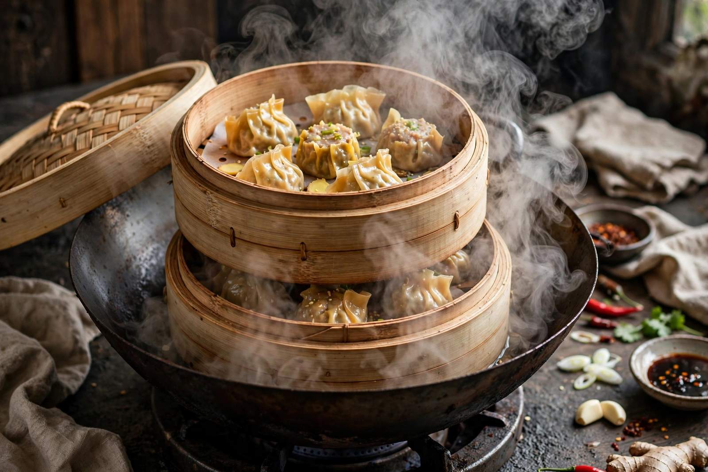

Steaming
From Wikipedia, the free encyclopedia

Steaming is a method of cooking using steam — the vapour given off by boiling water — to transfer heat to food without immersing it in liquid. The food sits in a perforated basket, rack or bamboo steamer above simmering water, enclosed so the steam circulates. Because nutrients are not leached into cooking water and no fat is needed, steaming is regarded as one of the healthiest techniques, and it preserves colour, texture and delicate flavour.
Steam cooking is ancient in China, where bamboo steamers have been used for millennia, and central to dishes such as dumplings, baozi buns and whole steamed fish. In the West it is used for vegetables, puddings (such as Christmas pudding and spotted dick), couscous in North Africa, and miso-glazed fish in Japan.
Equipment
Equipment ranges from stacked bamboo baskets over a wok, metal steamer inserts for saucepans, and tiered electric steamers, to commercial combination ("combi") ovens. Pressure steamers cook at above 100 °C and are faster still. The lid must fit well, and the water level checked so the pot does not boil dry.
Advantages
Steam transfers heat efficiently as it condenses on the cooler food. Foods keep more water-soluble vitamins (such as vitamin C) than when boiled, and gentle steaming suits fragile items — custards, fish fillets, leafy greens — that would break apart in water. The trade-off is that steam cannot exceed 100 °C at atmospheric pressure, so no browning occurs.
Dishes
Signature steamed dishes include Chinese xiaolongbao and har gow, Cantonese steamed whole fish with ginger and spring onion, British steamed suet puddings, Moroccan couscous steamed over a stew, and American ice-cream-era steamed Boston brown bread. Modern "en papillote" cooking is a close relative, trapping steam inside a paper parcel.